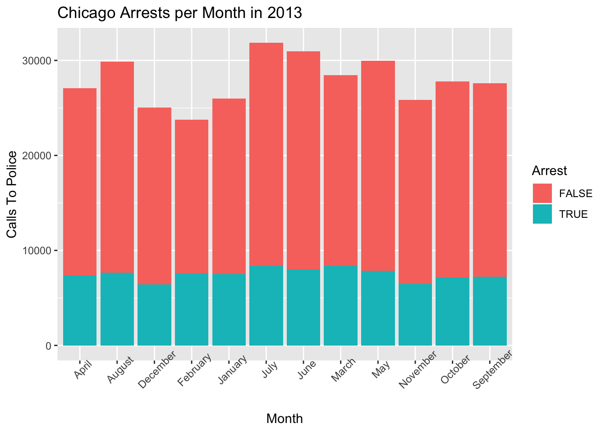

Chapter 6 Taking It To The Next Level
Here we look at some data obtained from the City of Chicago Open Data Portal https://data.cityofchicago.org/. This is data that represents phone calls to the police during the year of 2012. Just pick a folder on your hard drive and download the data.
url <- "https://raw.githubusercontent.com/steviep42/nursing_741/master/chi_crimes.csv"
download.file(url,"chi_crimes.csv")Next, read the file in to a local data frame:
## Parsed with column specification:
## cols(
## .default = col_character(),
## ID = col_double(),
## Arrest = col_logical(),
## Domestic = col_logical(),
## Ward = col_double(),
## `X Coordinate` = col_double(),
## `Community Area` = col_double(),
## `Y Coordinate` = col_double(),
## Year = col_double(),
## Latitude = col_double(),
## Longitude = col_double()
## )## See spec(...) for full column specifications.6.0.1 Inspecting the Data
The way the data is organzied is that each row represents a call to the police which may or may not result in an actual arrest. In any case there will be a case number assigned to the call and other information such as the Best, Ward, Block, and Community Area will be noted. If there is an arrest it will be recorded and then it will be categorized according to an FBI code. The location of the call will be recorded in latitude and longitude. Some basic questions might be how many rows and columns there are, etc
## Observations: 334,141
## Variables: 22
## $ `Case Number` <chr> "HV530781", "HV532227", "HV531513", "HV53…
## $ ID <dbl> 8856945, 8858652, 8858725, 8857128, 88575…
## $ Date <chr> "10/23/2012 10:10:00 AM", "10/23/2012 10:…
## $ Block <chr> "040XX W LAKE ST", "001XX W WASHINGTON ST…
## $ IUCR <chr> "1210", "0870", "0930", "4387", "0890", "…
## $ `Primary Type` <chr> "DECEPTIVE PRACTICE", "THEFT", "MOTOR VEH…
## $ Description <chr> "THEFT OF LABOR/SERVICES", "POCKET-PICKIN…
## $ `Location Description` <chr> "CTA PLATFORM", "CTA TRAIN", "STREET", "A…
## $ Arrest <lgl> TRUE, FALSE, FALSE, TRUE, FALSE, FALSE, F…
## $ Domestic <lgl> FALSE, FALSE, FALSE, TRUE, FALSE, FALSE, …
## $ Beat <chr> "1114", "0122", "1523", "0221", "0331", "…
## $ District <chr> "011", "001", "015", "002", "003", "020",…
## $ Ward <dbl> 28, 42, 37, 4, 5, 46, 27, 16, 24, 9, 17, …
## $ `FBI Code` <chr> "11", "06", "07", "26", "06", "14", "06",…
## $ `X Coordinate` <dbl> 1149614, 1175486, 1139375, 1182893, 11917…
## $ `Community Area` <dbl> 26, 32, 25, 39, 43, 3, 23, 66, 26, 50, 67…
## $ `Y Coordinate` <dbl> 1901481, 1900854, 1903385, 1875958, 18592…
## $ Year <dbl> 2012, 2012, 2012, 2012, 2012, 2012, 2012,…
## $ Latitude <dbl> 41.88558, 41.88332, 41.89100, 41.81483, 4…
## $ `Updated On` <chr> "10/25/2012 12:41:06 AM", "10/29/2012 12:…
## $ Longitude <dbl> -87.72605, -87.63106, -87.76360, -87.6046…
## $ Location <chr> "(41.885581598748246, -87.72604656914372)…So let’s check this data frame out some more. For example, what are the factors in this data frame ? Those that take on only a few different values might be good summary variables.
## # A tibble: 1 x 22
## `Case Number` ID Date Block IUCR `Primary Type` Description
## <int> <int> <int> <int> <int> <int> <int>
## 1 334114 334139 121484 28383 358 30 296
## # … with 15 more variables: `Location Description` <int>, Arrest <int>,
## # Domestic <int>, Beat <int>, District <int>, Ward <int>, `FBI
## # Code` <int>, `X Coordinate` <int>, `Community Area` <int>, `Y
## # Coordinate` <int>, Year <int>, Latitude <int>, `Updated On` <int>,
## # Longitude <int>, Location <int>From viewing thism perhaps variables like Arrest, Domestic, FBI Code, District, and Ward could be good summary variables. We don’t really have any kind of measured data here.
We do have lots of dates which at this point are actually character strings so let’s turn them into dates and then work with them to get some more summary variables created. There are also some latitude and longitude information that we perhaps later use to draw some maps if we want. We’ll consider that later.
6.1 Creating Categories
suppressMessages(library(lubridate))
# Right now the dates and times are just a character string
str(chi$Date) ## chr [1:334141] "10/23/2012 10:10:00 AM" "10/23/2012 10:00:00 AM" ...# Note that the dates have a PM or AM string. Let's exploit
# that information to create a category that captures this information.
chi <- chi %>% mutate(am_pm=ifelse(grepl("PM",Date),"PM","AM"))
# Let's turn them into actual dates and times using the lubridate package
chi$Date <- parse_date_time(chi$Date,'%m/%d/%Y %I:%M:%S %p')
range(chi$Date)## [1] "2012-01-01 00:00:00 UTC" "2012-12-31 23:58:00 UTC"It’s worth noting that we can use some functions from lubridate to further group the dates and times so we can do some more specific analysis. Here is link to a tutorial on lubridate. Anyway try some of these:
## [1] "2012-10-23 10:10:00 UTC" "2012-10-23 10:00:00 UTC"
## [3] "2012-10-23 10:00:00 UTC" "2012-10-23 10:00:00 UTC"
## [5] "2012-10-23 10:00:00 UTC" "2012-10-23 10:00:00 UTC"# This will tell us what day of the week the given date and time represents
chi$Date %>% weekdays %>% head## [1] "Tuesday" "Tuesday" "Tuesday" "Tuesday" "Tuesday" "Tuesday"## [1] "October" "October" "October" "October" "October" "October"# Let's add a factor to the data table/data frame that gives the month
chi <- chi %>% mutate(Month=months(Date))
unique(chi$Month)## [1] "October" "September" "August" "July" "June"
## [6] "May" "April" "March" "February" "January"
## [11] "November" "December"6.2 Let’s Do Some Summarization
Let’s add in a few more factors based on the date since it will help us build some interesting tables as we try to understand the patterns in Chicago crime during the year of 2013. It is also important to understand how to work with dates since they wind up being important when looking at data. Not every data set will be a function of dates or be reliant upon them for interpretation but this one is.
It’s also not necessary to create these categories in advance or make them part of the data frame. We could do this on the fly as we will see later. We will create a category to classify the quarter during which the call to the police occurred.
chi <- chi %>% mutate(quarter=quarter(Date))
chi <- chi %>% mutate(weekdays=weekdays(Date))
chi %>% select(Month, am_pm, weekdays, quarter) %>% head()## # A tibble: 6 x 4
## Month am_pm weekdays quarter
## <chr> <chr> <chr> <int>
## 1 October AM Tuesday 4
## 2 October AM Tuesday 4
## 3 October AM Tuesday 4
## 4 October AM Tuesday 4
## 5 October AM Tuesday 4
## 6 October AM Tuesday 4Now we can start to ask some basic questions to better understand the data. When we have lots of categories in our data for which we could make some count-based summaries which gives us some frequencies. For example, let’s focus on the “Arrest” variable to figure out how many Arrests happened. What about the FBI codes ?
## # A tibble: 2 x 2
## Arrest n
## <lgl> <int>
## 1 FALSE 244210
## 2 TRUE 89931# And we could see the count of reported crimes according to FBI code
chi %>% count(`FBI Code`) %>% arrange(desc(n))## # A tibble: 30 x 2
## `FBI Code` n
## <chr> <int>
## 1 06 73414
## 2 08B 52377
## 3 14 35837
## 4 18 33523
## 5 26 29268
## 6 05 22749
## 7 07 16372
## 8 08A 15261
## 9 03 13428
## 10 11 10884
## # … with 20 more rowsRelative to the FBI codes I don’t know what the code actually mean but I found a description of them at this URL So it seems to me that the top 5 areas, at least by FBI codes, are:
- Larceny
- Simple Battery
- Vandalism
- Drug Abuse
- Misc Non-Index Offense
We could do two-way table of course. This helps us look at relationships between categories. Here we look at how Arrests relate to whether it’s day or night. When do most arrests occur ?
## # A tibble: 2 x 3
## Arrest am_pm n
## <lgl> <chr> <int>
## 1 TRUE PM 62229
## 2 TRUE AM 27702So let’s plot a bar chart that shows is the total number of calls to the police for each month and what portion of those calls each monht resulted in an arrest.
chi %>% count(Arrest,Month) %>%
ggplot(aes(x=Month,y=n,fill=Arrest)) +
geom_bar(stat="identity") +
theme(axis.text.x=element_text(angle=45)) +
ylab("Calls To Police") +
ggtitle("Chicago Arrests per Month in 2013")